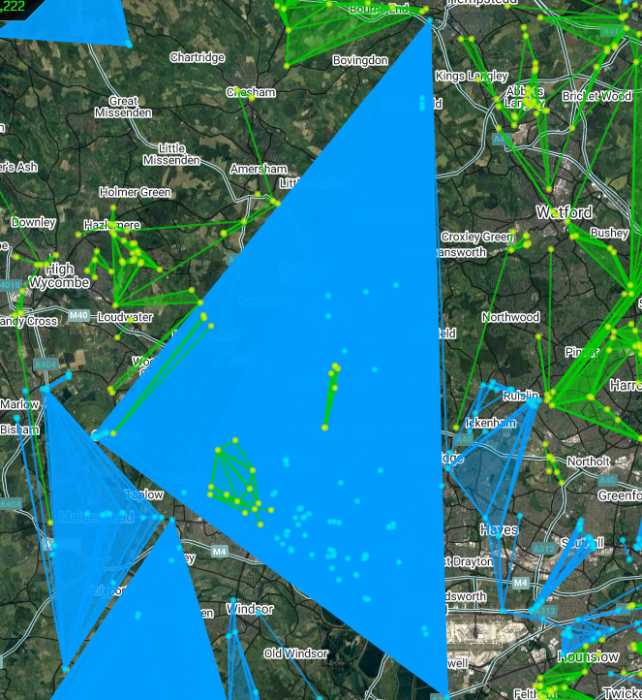
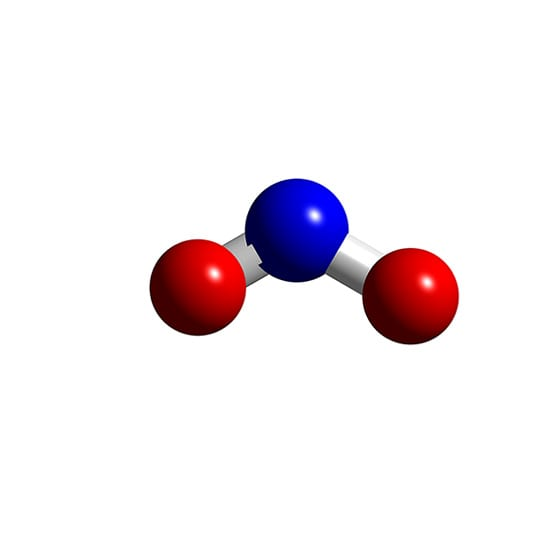

<!DOCTYPE html>
<html lang="en">
<head>
    <meta charset="UTF-8">
    <meta http-equiv="X-UA-Compatible" content="IE=edge">
    <meta name="viewport" content="width=device-width, initial-scale=1.0">
    <title>Intel GO</title>
    <link rel="shortcut icon" href="../src/images/icon32.png" type="image/x-icon">
    <link rel="stylesheet" href="../src/style.css">
    <script src="../src/leaflet-src.js"></script>
    <script src="../src/jquery-3.6.1.min.js"></script>
    <script src="../src/plugins/L.Control.Zoomslider.js"></script>
    <script src="../src/plugins/L.Control.MousePosition.js"></script>
    <script src="../src/plugins/Leaflet.PolylineMeasure.js"></script>
</head>
<body>
    <div id="mapdiv" class="col-md-9"></div>
    <script>
        const LatLngToArrayString = (ll) => {
            return `[${ll.lat.toFixed(5)}, ${ll.lng.toFixed(5)}]`
        }
        var mymap, lyrOSM, mrkCurrentLocation, popExample, ctlZoom, ctlAttribute, ctlScale, ctlPan, ctlZoomslider, ctlMouseposition, ctlMeasure
        $(document).ready(function(){
            mymap = L.map(`mapdiv`,{
                center:[ 13.769028, 100.540186],
                zoom:13,
                zoomControl:false,
                // dragging:false,
                // minZoom:10,
                // maxZoom:14
                attributionControl:false
            })
            lyrOSM = L.tileLayer(`http://{s}.tile.osm.org/{z}/{x}/{y}.png`)
            mymap.addLayer(lyrOSM)

            // https://github.com/kartena/Leaflet.Pancontrol
            // ctlPan = L.control.pan().addTo(mymap)

            // https://github.com/kartena/Leaflet.zoomslider
            ctlZoomslider = L.control.zoomslider({position:"topright"}).addTo(mymap)

            ctlMeasure = L.control.polylineMeasure().addTo(mymap);

            ctlAttribute = L.control.attribution({position:'bottomleft'}).addTo(mymap)
            ctlAttribute.addAttribution(`OSM`) //Open Street Map
            ctlAttribute.addAttribution(`<a href="https://github.com/pinghuskar">Chadin Chaipornpisuth</a>`)

            ctlScale = L.control.scale({
                position:'bottomleft',
                metric:false,
                maxWidth:200
                // https://leafletjs.com/reference.html#control-scale
            }).addTo(mymap)

            // https://github.com/ardhi/Leaflet.MousePosition
            ctlMouseposition = L.control.mousePosition().addTo(mymap)

            const sucksTransport = [
                {
                    name: "สนามกีฬาแห่งชาติ",
                    latlng: [13.746531, 100.529087],
                    type: "BTS",
                    bannergress: [
                        {
                            path: "exploring-pathum-wan-district-6bfe",
                            bg: "b37540b143584c88dc2ed2db8d4d73ce",
                            w: 480,
                            h: 320
                        }
                    ]
                },
                {
                    name: "สยาม",
                    latlng: [13.745615, 100.53421],
                    type: "BTS",
                    bannergress: [
                        {
                            path: "we-love-thailand-banner-5280",
                            bg: "bd429af0c315c2031aa587ef35e6bc89",
                            w: 480,
                            h:  80
                        }
                    ]
                },
                {
                    name: "ชิดลม",
                    latlng: [13.744114, 100.542991],
                    type: "BTS",
                    bannergress: [
                        {
                            path: "welcome-to-bangkok-dbaa",
                            bg: "f0e6745754c4ccf6ccfdf15c773e20ff",
                            w: 480,
                            h: 160
                        }
                    ]
                },
                {
                    name: "เพลินจิต",
                    latlng: [13.743072, 100.54916],
                    type: "BTS",
                    bannergress: [
                        {
                            path: "",
                            bg: "",
                            w: 480,
                            h: 480
                        }
                    ]
                },
                {
                    name: "นานา",
                    latlng: [13.740655, 100.555345],
                    type: "BTS",
                    bannergress: [
                        {
                            path: "",
                            bg: "",
                            w: 480,
                            h: 480
                        }
                    ]
                },
                {
                    name: "อโศก",
                    latlng: [13.737003, 100.560409],
                    type: "BTS",
                    bannergress: [
                        {
                            path: "asoke-is-the-best-place-in-bangkok-961c",
                            bg: "7168c6b9620a07b66e22b777b82b2484",
                            w: 480,
                            h: 480
                        }
                    ]
                },
                {
                    name: "พร้อมพงษ์",
                    latlng: [13.730499, 100.569577],
                    type: "BTS",
                    bannergress: [
                        {
                            path: "the-way-of-destroyer-2cc5",
                            bg: "6510f81211c7064fd4e45afd54194074",
                            w: 400,
                            h:  80
                        }
                    ]
                },
                {
                    name: "ทองหล่อ",
                    latlng: [13.724256, 100.578445],
                    type: "BTS",
                    bannergress: [
                        {
                            path: "thonglor-fe9a",
                            bg: "ad3ef5385bbfe200714a75fba3565045",
                            w: 480,
                            h: 240
                        }
                    ]
                },
                {
                    name: "",
                    latlng: [],
                    type: "BTS",
                    bannergress: [
                        {
                            path: "",
                            bg: "",
                            w: 480,
                            h: 480
                        }
                    ]
                },
            ]
            for (let station of sucksTransport) {
                if (station.name !== "" && station.latlng !== [] ) {
                    L.marker(station.latlng).addTo(mymap).bindPopup(`
                    <h2>${station.name}</h2>
                    <a href="https://bannergress.com/banner/${station.bannergress[0].path}" target="_blank">
                        
                        </a>
                        `)
                }
            }

            mymap.on('contextmenu', function(e) {
                var dtCurrentTime = new Date()
                var lat = e.latlng.lat.toFixed(6)
                var lng = e.latlng.lng.toFixed(6)
                const z = 17
                const windy_zoom = 8
                L.marker(e.latlng).addTo(mymap).bindPopup(
                    `
                    ${e.latlng.toString()}
                    <br>${dtCurrentTime.toString()}
                    <br><h6>Open in <a href="https://pinghuskar.github.io/X-Marks-Leaflet/?lat=${lat}&lng=${lng}" target="_blank">X Marks Leaflet</a></h6>
                    <br>
                    
                    
                    
                    
                    
                    `
                    )
                    // https://pinghuskar.github.io/Mark-Center-by-Province/js/configData.js
            })
            mymap.on('keypress',function(e) {
                if (e.originalEvent.key === "l") {
                    mymap.locate()
                }
            })
        })
    </script>
</body>
</html>